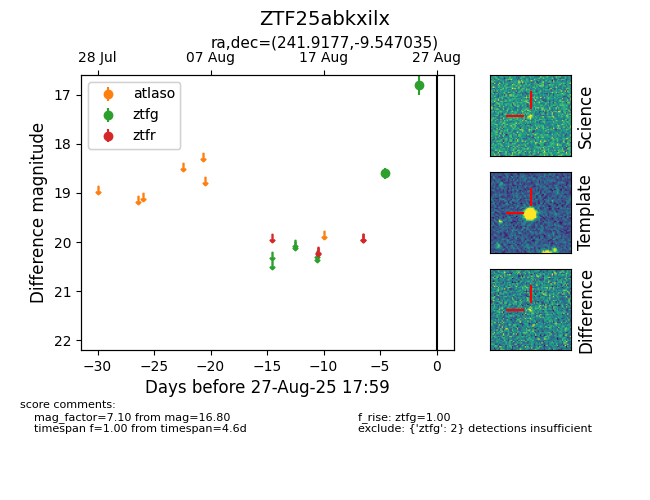

Target ZTF25abkxilx at 2025-08-27 17:59, see:
FINK: fink-portal.org/ZTF25abkxilx
Lasair: lasair-ztf.lsst.ac.uk/objects/ZTF25abkxilx
ALeRCE: alerce.online/object/ZTF25abkxilx
alt names
ZTF25abkxilx (ztf,fink)
coordinates:
equatorial (ra, dec) = (241.9177,-9.54704)
galactic (l, b) = (2.2332,+29.96667)
photometry
last ztfg=16.80
2 ztfg detections
